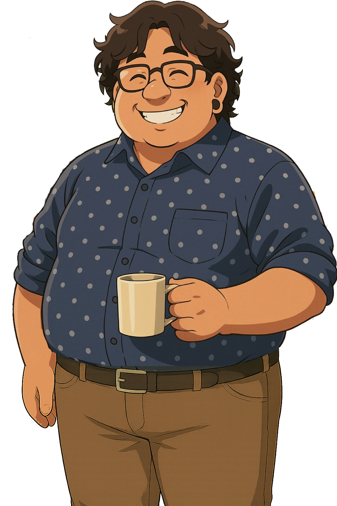
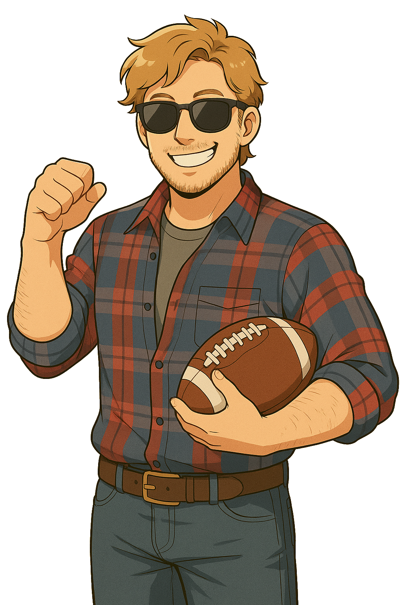

Who Ate My Sandwich?

Zack is known for his love of food in general but he also has a secret stash of snacks and wouldn't need my sandwich.

Mike is always seen with a salad or eating organic, it's a lifestyle choice but he has been known to sneak a bite, or two, when no one is looking.

Sarah has a history of using items from the fridge without looking at the names. She's so busy that she often grabs the wrong lunch.

Alicia is known for her love of sandwiches but is also very secretive about her lunch choices. She even has a shelf of gourmet ingredients for her lunches.
Chase usually makes a big show of his "high dollar" lunches, but he didn't have one today...

Matt is known for his love of roast beef sandwiches, and he will eat most of the food from office parties. He eats like he still plays varsity and he also has a history of taking other people's lunches when they aren't looking.